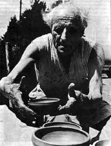
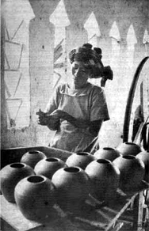
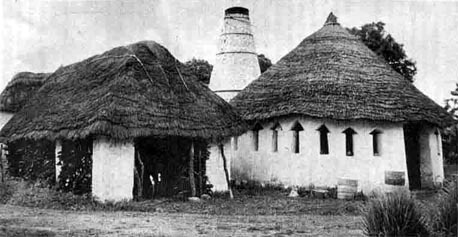
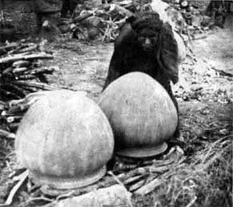

| Michael Cardew 1901-1980
Nigerian Field Vol 66 Pt.2 Oct 2001 - Michael Cardew and the
Abuja Potters by Liz Moloney
The following article is courtesy of the Nigerian
Field Society and the author Liz Moloney. © Nigerian
Field Society. Photos by Doig Simmonds ©1959. Donations may
be made to the society via UK Vice President, Joyce Lowe, email
unitedkingdominfo@nigerianfield.org.
| 
|
The Ladi Kwali
Pottery in Suleija is 54 years old this year. It has not been
a working pottery as long as that, it is true; but it was
in August 1951 that the English studio potter, Michael Cardew,
recruited by the Nigerian colonial Government in 1950 as pottery
Officer, moved up from Lagos to the small town then called
Abuja and started, with a small team of local workmen to build
the new Pottery Training Centre. Ladi Kwali was not to join
the trainees there until the end of 1954, but Cardew had already
been excited by her beautiful pots in the village of Kwali
and hoped to persuade her to come and work with him. Looked
at from the vantage point of 2001, for the colonial government
to start busying itself about the “improvement” of the pottery
techniques of Nigeria it was odd thing to happen, considering
that Nigerian pots, made according to the traditional method
practiced for centuries, were are magnificent already. The
decision to do this, however, resulted in the potters who
made then. Michael Cardew was one of the best publicist ever
for West Africa`s traditional potters even as he worked to
create a new network of rural Potteries using techniques foreign
to the region. |
|
He went to Nigeria when he was 49, not because
he had an urge to change Nigerian pottery but because he desperately
wanted to get back to west Africa where he had unfinished
business after 5 years spent in Ghana ( then Gold Coast )
1943-1948. He was deeply attached to a young potter there,
Clement Kofi Athey, who was running the pottery at Vume they
had set up together, but had had to return to England after
re-current ill-health and he felt he owed it to Kofi not to
allow that project to fail. From Nigeria he thought he could
keep in touch, and visit during his leave, for the sake of
his obsession with Africa he left behind him once again his
pottery at Wenford bridge in Cornwall ( rented out), his wife
(teaching in London), three young sons ( still at school)
and his reputation as an outstanding studio potter ( known
to few, even among the British, in Nigeria ). Of course, Nigeria
took him over and altered his motive.
He did a preliminary tour of the Western region, and quickly
reported to the department of commerce and industries that
some of their ideas needed modification, he could hardly do
himself out a job by rejecting them altogether, given his
desire to be in West Africa and work with West African Potters.
|

Ladi Kwali making pots on a wheel, ca 1959
|

The Pottery, Abuja c 1959, left woodstove, right kiln
| In fact the job
description he had been given was not about changing traditional
pottery but about setting up a sort of inter mediate technology
project, a rural industry using the wheel, glazes and high-firing
in the European studio pottery tradition. It was evidently
prompted by the perceived need for a home-grown industry to
supply the middle-class Nigerian demand for a glazed tableware
suitable for European-style meals and hot drinks, at that
time already supplied by factory-produced imports.
Cardew`s first report of July 1950 states
that a wholesale transformation of the Nigerian native pottery
industry is considered to be neither practicable or desirable`,
although he said this idea had been widely entertained by
non-technical observers. This native industry had ‘technical
advantages peculiar to it, which the others do not possess’,
was ‘distinguished by simplicity and nobility in shape and
decoration’, remarkably cheap to produce, and ‘in a healthy
state and not likely to suffer from the competition of locally-produced
glazed wares.’ He pointed out that glazing and high-firing
to make the proposed table ware non-porous ‘ would largely
lose one of the great virtues of the native pottery - tolerance
of the thermal shock.’ He felt able to support the argument
for a home industry to run parallel to the local village pottery,
producing pots for a modern middle- class westernized life
style. he proposed small ‘experimental stations’ with small
numbers of trainees, rather than a central school of ceramics.
This report resulted in his promotion to
senior pottery Officer, and for the next two years he was
involve in the setting up of pottery at Okigwe and Ado-Ekiti
with other British pottery Officers, V A Gregory and S Atkins.
But the decision about where to put the northern region pottery
training Centrex turned out to be the crucial one for Cardew,
and for a number of Nigerians whose lives were changed by
it.
The notes, illustrated by sketches, for his
second report in early 1951, following a tour of Nigeria`s
Northern Region in November and December 1950, show his excitement
as he discovered its varied pottery; he especially admired
the pots made by women in the Abuja area. He was able, as
a colonial Officer, to call upon an impressive network of
existing knowledge to help him. Local potters, district heads,
administrators, miners, Geologists Educationists Missionaries
- all sorts of people knew about the soil structure, the transport
systems, the fuel, the traditions and other factors he had
to consider in deciding how to proceed, and in particular,
where to site the Pottery Training Center. He was allowed
to use the Furnaces of the Amalgamated Tin mines of Jos to
test clay samples. It was a unique support system for a researcher
into traditional pottery as well as prospective local potter.
‘We decided ABUJA after all!’ he wrote in
his note after a meeting in Kastina with Stanhope (Sam) White
of the department of Commerce and Industries, Kaduna, in April
1951. ‘Good and central for N.Nigeria, Wonderful local pots,
a nice town where trainees can live, Hausas would not be out
of place there, and above all, a 1st rate Emir – yes, hurray
!!!’ The ‘after all’ meant ‘in spite of Abuja’s not being
on the railway’, but as it was to be a training center and
not a commercial production Center, this was decided not to
be crucial. Abuja was the place for ‘inspiration’, he said,
and that would made for good pots.
From late August 1951 he supervised the building
of the pottery at Abuja, locally thatched buildings; (the
present ones were built in 1973 ) and started selecting trainees.
Who were these to be? An aspect of the European-style pottery
which contrasted with African pottery was the fact that the
trainees were expected to be men, where as most of Nigerian
potters were women. Hausa land was the big exception, although
within northern Nigerian there were also non-Hausa communities
with women potters. The Abuja emirate was Hausa, that its
population was overwhelmingly Gwari and included outstanding
Gwari women potters. Cardew, in his 1950 report, said he envisaged
the new techniques being mainly to men with only a ‘Small
fringe’ of women potters.
This could be for a numbers of reasons, some
referred to elsewhere in Cardew’s writings such as the fact
that in the traditional industries, potting was,in parts,
the whole way of life, not something as a western industrialized
society and regarded as a career. Men would found it easier
to train and join a paid work- force, because they were less
encumbered by family commitments. This view may be regarded
as reflecting British prejudices and practices and distorting
African Society structure, as happened in the case of Agricultural
and other training. Or you could see it as a realistic appraisal,
since Cardew had already suggested that the traditional, mainly
women, potters would not adversely affected by a new small-scale
industry and African societies, like British once at the time
also tended to separate men’s and women’s work. He had himself
always worked with other men in both England and the Gold
Coast, except when apprenticed with Bernard Leach, and would
probably be inclined to prefer this.
As it later turned out, the Abuja Pottery
Training Centre`s star potter ( Cardew would have hated the
description of any potter as a star, but that was exactly
what she became on overseas tour ) was a woman, Ladi Kwali,
whose basic skill and genius, he always freely acknowledged,
were fully developed before she joined him. But there were
always more men than women working with Cardew. It is odd
in a way that he went along with the argument for a separate
work force outside the old social structures, given that he
always professed a desire to eliminate the distinction between
one’s working life and everything else, and to achieve an
undivided life as had been done in pre-industrial England.
But he had to work within a framework of an administration
struggling to show that it was modernizing the northern region
of Nigeria. I suspect that this masculine bias involve all
sorts of different reasons. |
| So the earliest
trainees were Hausa men, Audu and Gwadabe from Kano, Closely
followed by men from other regions with an increasing number
of local potters. Among the first to start were Okoro Ike
from the south-east, Tankol Ashada Mohammed and Bawai Ushafa.
Audu Mugu and Sidi came down from Sokoto. Later came Bako
Maigari, Audu (Wahala) and Musa (Nawa) Nok in 1956, Mohammed
Inuwa, Hassan Lapai and Usman Zukoko in 1957, Ibrahim Muhtari
Zaria and Peter Bute Kuna Gboko in 1957, Gugong Bong, Bala
Yawa and Abu Karo in 1958 . Kofi Athey, though continuing
to run the Vume pottery in Ghana, worked at Abuja for several
stints of a few months before coming to Nigeria to run the
new Jos pottery in 1963. The kiln gang, who remained throughout
Cardew`s time and later, were Danjuma Kilin, Husseine, Gwari
and Na`anabi.
However quite early on, Cardew`s preference
for male trainees was overridden by his respect for superb
skill and his wish to work with people endowed within. In
the Abuja area, these were women. He had wanted to bring Ladi
Kwali into the training Centrex from the beginning, and finally,
after negotiations with her and with the local authorities,
she arrived in December 1954.She learned to throw ordinary
tableware and smaller pots for practical use, but she also
continued to hand-build pots, which were then controversially
glazed and high-fired. Cardew was well aware of the drawbacks
of this procedure in terms of weight and utility. They were
much less breakable than traditional pots though, and they
became Collector`s treasures, now worth huge sums at auction
which neither Cardew nor Ladi herself could ever have envisaged.
Cardew`s international reputation played
a key role in putting Abuja potters on the international ceramic
world map. He had previously exhibited at the Berkeley Gallery
in London, and was able to arrange for Abuja exhibitions there
in 1958 and 1959, which increased his own fame and made Ladi
Kwali in particular a name in the pottery world. Her success
opened the door to other women potters: Halima Audu from Ido,
came in 1959, and made some superb pots (in Britain, her work
can be seen in the Milner-White collection at York City Art
Gallery.) She died tragically young only two years later.
Asibe Ido and Lami Toto arrived in 1963, followed by Kande
Ushafa. At the time of Cardew`s departure in 1965, the four
surviving women along with six men - Tanko Ashada, Gugong
Bond, Peter Gboko, Abu Karol, Ibrahim Muhtari and Bawa Ushafa,
plus Danjuma Landam, Assistant pottery Officer, were still
at the Abuja Pottery training center. The Kano and Sokoto
Potters had gone back to their home towns, and Okoro had gone
to modern ceramics in Umuahia. |

Above - Ladi Kawli's pots being fired
in the traditional way
Some of these potters and no doubt others who never
left there villages, were also outstanding, but Ladi Kwali remained
grande dame of the Abuja pottery. In 1962 she spent three weeks
in England demonstrating Gwari pot – building techniques, attending
another Berkeley Gallery Exhibition of Abuja Pottery and received
the MBE. Coming back to Abuja she was so full of her experiences
that other staffs sardonically nicknamed her ‘Radio London’, ( as
Michael O’Brien, who came to Abuja soon afterwards and later took
over from Cardew, recalls). later she was awarded an honorary Doctorate
of Ahmadu Bello University, Zaria , an unprecedented academic distinction
for a woman potter without formal education.
She would certainly not have granted this if she
had not been ‘discovered’ by Cardew and then the world outside Nigeria.
Michael Cardew stayed at Abuja until 1965, normally spending ten
months there and two on leave at Wenford Bridge in every year, but
also going back to Ghana occasionally to help Kofi at Vume. Abuja
turned out to be just as pleasant a place in which to run a pottery
training center as he had envisaged in his diary notes of 1951,
and the Emir,the famous Suleiman Barau,was even better than ‘1st
rate’,being a friend, supporter and advisor in everything. But it
was not an easy life. Cardew`s early Nigerian years involved him
in relentless physical slog, following in the footsteps of the great
geologist Falconer on camping treks of several days at a time in
his search for kaolin, feldspar, limestone and other raw materials
for pottery and glazes. He was already in his fifties - much older
than the Nigerians who accompanied him -and continued to suffer
regular bouts of ill-health, including bilharzia and from the results
of some dramatic car accidents.
Cardew was unique in his relationship with Nigerian
potters, But he was also part of a group of British people in the
1950s who tried, in the run-up to independence, to make sure that
Nigerian art and history were appreciated and preserved for the
people of Nigeria. these included Bernard Fagg, who excavated the
Nok culture, started the Jos museum and instigated instigated the
magnificent collection of pots there;Sylvia Leith-Ross, who collected
the pots for jos at the already distinguished career in education,
the historian Michael Crowder, who succeeded E.H.Duckworth as editor
of Nigeria Magazine and Kenneth Murray, first Survey of Antiquities.
He wrote the introduction ‘pottery techniques in Nigeria’ for Sylvia
Leith-Ross’s Nigerian pottery ( Ibadan,1970) and articles on traditional
pottery for Nigeria Magazine as well as his book pioneer pottery
for studio potters starting up in similar conditions.
The Abuja Pottery Training Centre never fulfilled
the early aim of spreading a network of small potteries, run by
potters trained there, to supply new Nigerian needs.By the late
fifties it has become a show piece celebrated in Nigeria and abroad,
and sold mainly to expatriates and members of Nigerian elites. the
best pots were put aside for London or other European exhibitions.
Peter Dick, a british potter who worked at Abuja in 1961-2, remembers
the staff saying ‘Sai London! Sai paris!’ when an exceptionally
good pot emerged from the kiln.
Potteries started by Abuja- trained potters under
Cardew’s guidance in Sokoto and Kano failed within a few years,
largely, Cardew said in later discussions with O’Brien, because
as government employees the workers never worked hard enough or
use enough initiative to make them succeed. The later Jos pottery,
founded with help from Bernard Fagg and money from an American ‘fairy
good mother`, did continue under Kofi Athey.
How did the training centre continue to obtain
government finance well into the era of independence Nigeria? It
was never commercial until after cardew’s departure ( under Michael
O’Brien}and its original purpose of created a network of rural industries
to supply to supply Nigerians with a tableware made locally from
local materials had not been fulfilled. Was Cardew just lucky to
find modest but secure patronage for a marvelous experiment in Anglo-Nigerian
cross-cultural ceramics,because of the particular circumstances
of northern Nigerian? Certainly the publicity Abuja brought to Nigeria
at a crucial time in its history was favorably viewed by both the
late colonial and new Nigerian governments.
Michael Cardew, having left Nigeria rather reluctantly
( though well past civil service retirement age at 64 ),did not
cease to be involved with his old friends. Ladi Kwali went on another
triumphant tour demonstrating her work, this time to the United
states in 1972 with Cardew and Kofi athey assisting and explaining
where necessary. She has continued working at the pottery, and one
the most delightful scenes in the BBC television film of 1974 Mud
and Water man shows her greeting Cardew on her return visit to his
old place at Abuja with its new buildings. He continued his active
and international life until his sudden death in Cornwall in 1983.
Ladi Kwali died at almost the same time but at a much younger age
in Minna. Kofi Athey, after leaving Jos at about 1990, worked in
the early nineties at Margaret Mama’s Jacaranda pottery, also near
Kaduna, with some other Abuja staff trained by Cardew, and is believed
to died in Ghana in the 1990’s. The Emir of Abuja, who was so vital
a part of this ( as of other developments in his emirate), has also
died. So what is left ?
There has been small but significant continuing
results from this unusual episode in late colonial history, and
this obsession of an English potter. There was of course the impact
of Ghana and Nigeria on Cardew’s own work, for the pots of his west
African period are generally agreed to have been among his best.
But also he gave a unique training to his small group of trainee
potters and stimulated appreciation, both in Nigeria and elsewhere,
of traditional pots and potters.
The Ladi Kwali pottery at Abuja is still government–owned
and employing staff, but reports suggest it is not producing much
pottery. I have not yet been able to visit it to see for myself.
Perhaps the Anglo-Nigeria studio pottery movement
started by Cardew is being upheld more effectively elsewhere in
the country. Michael O’Brien, Cardew’s colleague and immediate successor,
continues to spent much of his time unobtrusively helping Nigerian
potters. One such is Danlam Aliyu of Al Habib pottery, Minna, who
was trained by O’Brien at Abuja and then by Cardew at Wenford Bridge,
his pottery in Cornwall. Danlami has written in Pottery Quarterly
about his work and the fact that his work is different from that
of local women but in no way supplants it. His brother Umaru also
runs a successful small pottery, the Maraba near Kaduna. Others,
though not directly connected to Cardew, have found inspiration
in his work for similar subjects in other parts of Nigeria. Cardew’s
forecast that traditional pottery would not be threatened by this
studio pottery has been proved correctly. The threat comes from
much bigger forces. Cardew’s was a ‘small is beautiful’ enterprise,
embodying his care for, and enjoyment of, the people and their environment.
This article arises from research for a project
biography of Michael Cardew’s work in west Africa from 1942 to 1965.
I would like to thank Michael O’ Brien, Cardew’s successor at Abuja,
and Michael Cardew’s eldest son, Seth Cardew, of Wenford Bridge
Pottery in Cornwall, for their great help with this project, as
well as Cardew’s friends and colleagues who have contributed their
recollections.
REFERENCES
- Cardew M.A. 1950 A preliminary Survey of pottery in West Africa
(report). Lagos, Department of Commerce and Industry
- 1951 A Tour of parts of Zaria, Plateau, Niger, Ilorin and Kabba
…(report) Lagos Department of Commerce and Industry
- 1952 “Nigerian Traditional Pottery,” Nigeria Magazine3
- 1961 “Firing the Big Pot and Kwali,” Nigeria Magazine 7
- 1962 “ Traditional Pottery. The pottery training Centre,” in
Alhaji Hassan and Mallam Shaibu Na’ibi, tr.F.Heath,
A chronicle of Abuja, African Universities Press, 2nd ed. Lago
- 1969 Pioneer Pottery. London: Longma
- 1988 A Pioneer Potter: An Autobiography. London: Collin
- 1989 A Pioneer Potter (paperback) Oxford University Pres
- 1970 “Pottery Techniques in Nigeria,” in S.Leith Ross, Nigerian
Pottery Ibadan University Press
Unpublished notes, letters and diaries, consulted courtesy of
his son, Seth Cardew
- Aliyu,D 1980 “Nigerian Pottery Tradition and New Techniques,”
Pottery Quarterly
- Michael Cardew and pupils 1983 Catalogue: exhibition at York
City Art Galler
- Clark,G. 1978 Michael Cardew. London: Fabe
- Falconer, J.D 1911 the geology and geography of Northern Nigeria.
London: Macmillia
- Hallum, Alister 1974 Mud and Water Man BBC/Arts Council of Great
Britain (television program
- O’Brien,M. 1975 Abuja after Michael Cardew,” Ceramic Review
34
Quality of photos - The photographs are scanned
from the journal and enhanced as far as possible.
Also of interest: The Interpreting Ceramics
Michael Cardew Centenary Symposium. Includes several
articles on Cardew and an interview of Michael O’Brien by
Jeffrey Jones.
More Articles
|